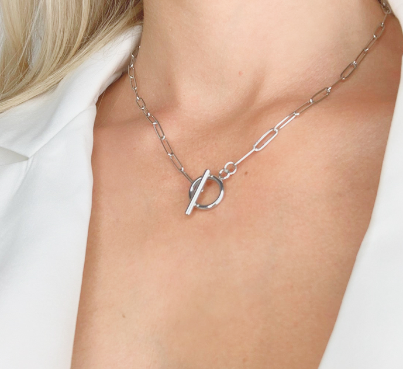
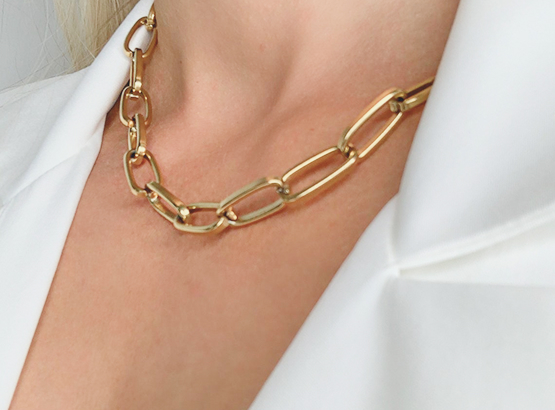
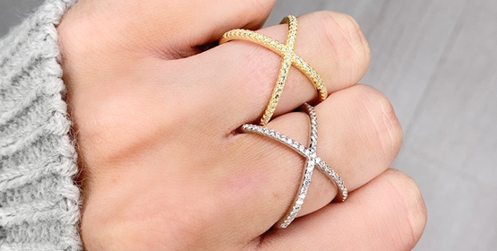
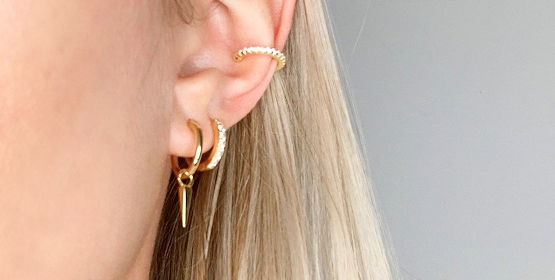
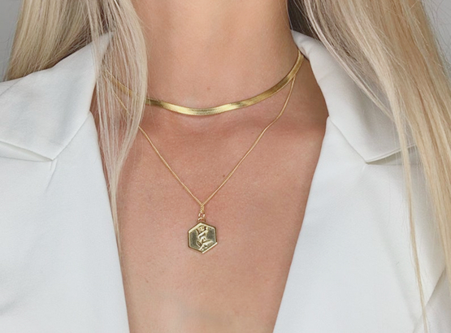
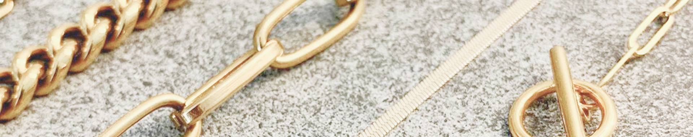
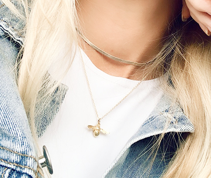
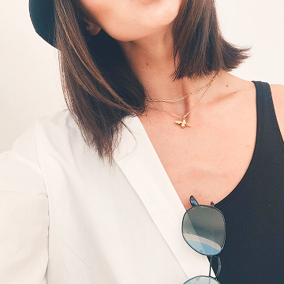
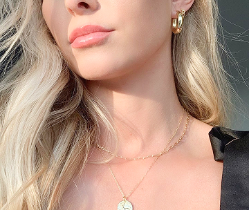

Gold chunky paperclip link chain
Classic tennis necklace
Cubic zirconias avails in gold chain
ViewA Unique Watch That Fits Your Style
The new Lawson collection is already here!. This quartz Lawson Franklin 38 model, designed with simplicity and elegance, is truly a cherry on the cake. Comes in different sizes and band colors, has a stainless steel back for a personalized engraving.
Learn MoreIdeal Has Never Been Closer
Have you ever come across a thing that is impossible to resist? Meet the Lawson Jefferson 38! Run by the vibration of a quartz crystal (32,786 times per second) under current to keep possibly accurate time. You will feel absolutely over the moon with it, we guarantee!
Learn More Our Bestsellers
-
 -
 Sterling silver criss cross ring
-
 Ear cuff with cubic zirconias
-
 Set of two gold stacking layering necklaces
Swiss Essence
The first association that comes to one’s mind with the phrase “a good wristwatch” is naturally a one made somewhere in Switzerland. Do you want to know what makes Swiss watches stand out?
Learn More Journal & Blog
-
 What Are the Types of Watch Movements?
-
 What Are the Types of Watch Movements?
-
 What Are the Types of Watch Movements?